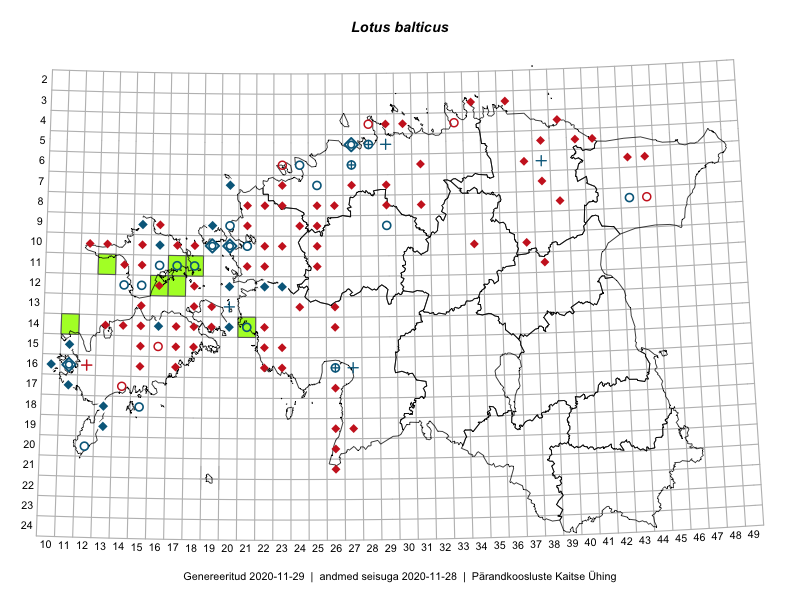

Lotus balticus
Uuendatud: 2016-12-01
Kaardile koondatud taksonid: Lotus balticus Miniaev

Kaart põhineb 7 kirjel.
Viited andmebaasikirjetele
- Eeva-Maria Jeletsky, Tarmo Niitla: 2015-06-28: 11-13: ala
- Eeva-Maria Jeletsky, Tarmo Niitla: 2015-06-17: 11-17: ala
- Eeva-Maria Jeletsky, Tarmo Niitla: 2015-06-20: 11-17: ala
- Eeva-Maria Jeletsky, Tarmo Niitla: 2015-06-17: 11-18: ala
- Eeva-Maria Jeletsky, Tarmo Niitla: 2015-06-21: 12-16: ala
- Eeva-Maria Jeletsky, Tarmo Niitla: 2015-06-21: 12-17: ala
- Mari Reitalu, Triin Reitalu: 2015-05-25: 14-11: GPS punkt